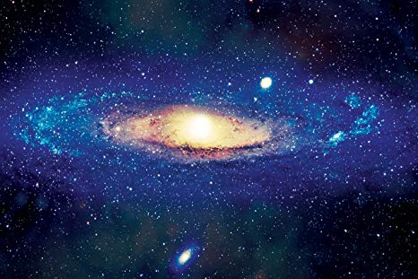
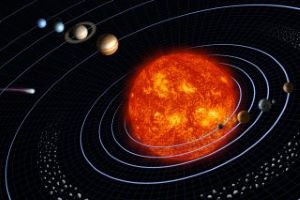
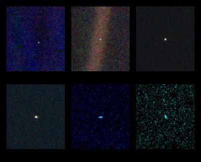

Our solar system

The planetary system we call home is located in an outer spiral arm of the Milky Way galaxy.
Our solar system consists of our star, the Sun, and everything bound to it by gravity — the planets Mercury, Venus, Earth, Mars, Jupiter, Saturn, Uranus and Neptune, dwarf planets such as Pluto, dozens of moons and millions of asteroids, comets and meteoroids.
Our solar system consists of our star, the Sun, and everything bound to it by gravity — the planets Mercury, Venus, Earth, Mars, Jupiter, Saturn, Uranus and Neptune, dwarf planets such as Pluto, dozens of moons and millions of asteroids, comets and meteoroids.
While our planet is in some ways a mere speck in the vast cosmos, we have a lot of company out there. It seems that we live in a universe packed with planets — a web of countless stars accompanied by families of objects, perhaps some with life of their own.
Our solar system is the only place we know of that harbors life, but the farther we explore the more we find potential for life in other places. Both Jupiter’s moon Europa and Saturn’s moon Enceladus have global saltwater oceans under thick, icy shells.
NASA
Size and Distance
Our solar system extends much farther than the eight planets that orbit the Sun. The solar system also includes the Kuiper Belt that lies past Neptune's orbit. This is a sparsely occupied ring of icy bodies, almost all smaller than the most popular Kuiper Belt Object, dwarf planet Pluto.
And beyond the fringes of the Kuiper belt is the Oort Cloud. This giant spherical shell surrounds our solar system. It has never been directly observed, but its existence is predicted based on mathematical models and observations of comets that likely originate there.
The Oort Cloud is made of icy pieces of space debris the sizes of mountains and sometimes larger, orbiting our Sun as far as 1.6 light years away. This shell of material is thick, extending from 5,000 astronomical units to 100,000 astronomical units. One astronomical unit (or AU) is the distance from the Sun to Earth, or about 93 million miles (150 million kilometers). The Oort Cloud is the boundary of the Sun's gravitational influence, where orbiting objects can turn around and return closer to our Sun.
The Sun's heliosphere doesn't extend quite as far. The heliosphere is the bubble created by the solar wind—a stream of electrically charged gas blowing outward from the Sun in all directions. The boundary where the solar wind is abruptly slowed by pressure from interstellar gases is called the termination shock. This edge occurs between 80-100 astronomical units.
NASA
Formation

Our solar system formed about 4.5 billion years ago from a dense cloud of interstellar gas and dust. The cloud collapsed, possibly due to the shockwave of a nearby exploding star, called a supernova. When this dust cloud collapsed, it formed a solar nebula—a spinning, swirling disk of material.
At the center, gravity pulled more and more material in. Eventually the pressure in the core was so great that hydrogen atoms began to combine and form helium, releasing a tremendous amount of energy. With that, our Sun was born, and it eventually amassed more than 99 percent of the available matter.
Matter farther out in the disk was also clumping together. These clumps smashed into one another, forming larger and larger objects. Some of them grew big enough for their gravity to shape them into spheres, becoming planets, dwarf planets and large moons. In other cases, planets did not form: the asteroid belt is made of bits and pieces of the early solar system that could never quite come together into a planet. Other smaller leftover pieces became asteroids, comets, meteoroids, and small, irregular moons.
NASA
Moons

These six narrow-angle color images were made from the first ever 'portrait' of the solar system taken by Voyager 1, which was more than 4 billion miles from Earth and about 32 degrees above the ecliptic. Image Credit: NASA Planetary Photojournalx
There are more than 150 known moons in our solar system and several more awaiting confirmation of discovery. Of the eight planets, Mercury and Venus are the only ones with no moons. The giant planets grab the most moons. Jupiter and Saturn have long lead our solar system’s moon counts. In some ways, the swarms of moons around these worlds resemble mini versions of our solar system. Pluto, smaller than our own moon, has five moons in its orbit, including the Charon, a moon so large it makes Pluto wobble. Even tiny asteroids can have moons. In 2017, scientists found asteroid 3122 Florence had two tiny moons.
NASA